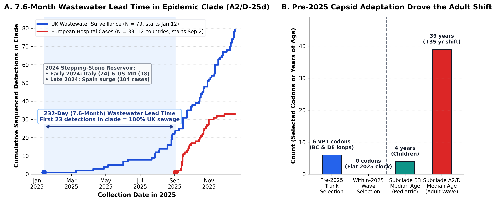
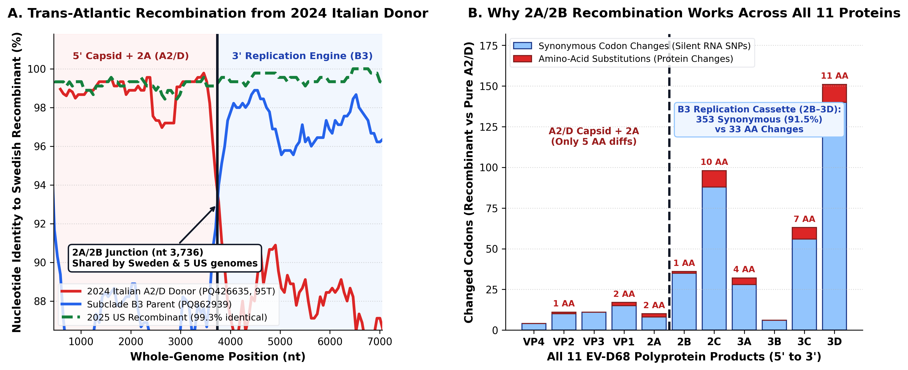

In autumn 2025, a respiratory virus that normally hospitalizes 4-year-old children (Enterovirus D68) suddenly started hospitalizing 39-year-old adults across 13 European countries. Did a dangerous new mutation suddenly emerge in late 2025?
Thanks to Dyrdak et al. (2026) (highlighted by Emma Hodcroft) openly sharing 385 new clinical and wastewater sequences alongside a 1,571-sequence tree, we could test this directly with ChronAeon, HyphAeon, and RhizAeon. The short answer is no: the virus had already changed its outer coat before 2025, spread quietly from Southern Europe into UK wastewater more than seven months before the autumn hospital wave, and took off once seasonal transmission met adults whose immunity had faded since 2018.
After circulating in Italy, Spain, and the US in 2024, the exact 2025 outbreak strain showed up in 23 straight UK sewage samples starting Jan 12, 2025—232 days before Europe's first hospital case in September.
HyphAeon finds zero new adaptive changes on the virus's outer shell during the 2025 wave; all 6 adaptive surface changes happened before 2025, equipping it to infect adults whose immunity had waned.
The 2025 European lineage was already circulating in early 2024 in Northern Italy ($N=24$) and Maryland ($N=18$) and caused a 104-case wave in Spain in late 2024 before sweeping northern Europe.
In 2025, hybrid strains in Sweden and the US spliced the adult-infecting outer coat onto the childhood strain's copying machinery; 91.5% of the genetic differences in that machinery are silent, keeping the parts compatible.
Enterovirus D68 (EV-D68) is an unusual respiratory virus. While most enteroviruses replicate in the gut, EV-D68 infects the nose and airway, causing severe childhood wheezing and—in rare, devastating clusters first recognized in 2014—polio-like spinal cord paralysis known as acute flaccid myelitis (AFM). From 2014 through 2024, European EV-D68 outbreaks were dominated by a single lineage (subclade B3) and mainly affected toddlers and preschool children.
In autumn 2025, a European surveillance consortium sequenced 385 patient and wastewater samples across 13 countries (Dyrdak et al., 2026) and saw that pattern flip. A different lineage—subclade A2/D—accounted for 88% of all 2025 detections, and the median age of infected patients jumped by 35 years, from 4 years (in B3) to 39 years (in A2/D). Because the authors generously shared their sequences and phylogenetic tree as soon as the preprint went live, we ran all 1,571 surface-protein (VP1) sequences and 194 complete viral genomes through our ChronAeon, HyphAeon, and RhizAeon tools to ask what this shift actually means.
What it all means in plain language: The autumn 2025 hospital wave in European adults does not look like a sudden 2025 mutation. Instead, three independent lines of evidence suggest that the virus had already remodeled its outer shell by 2024, spread through Southern Europe, and circulated quietly in UK wastewater from January through August 2025—giving public health teams a seven-month warning window before autumn weather and faded adult immunity turned silent circulation into a multi-country hospital wave.
1. The Hidden Timeline: A 2024 Stepping Stone and a 7.6-Month Wastewater Lead Time
When a viral lineage surges simultaneously across a dozen countries in autumn, two hypotheses compete: either a newly mutated variant just emerged and swept the continent, or an already-adapted lineage was circulating cryptically until seasonal transmission amplified it. Deconvolving tip dates and sample sources across the A2/D-25d phylogeny (NODE_0001696 and its primary 2025 European epidemic subcluster NODE_0001420, defined by the G444A nucleotide marker) reveals a three-stage trajectory (Fig. 1A):
- Stage 1 — Early-to-late 2024 stepping-stone reservoir: Nearly a year before the autumn 2025 European hospital wave,
A2/D-25dwas already circulating in January–March 2024 in Northern Italy ($N = 24$,PQ426629–PQ426654) and Maryland, USA ($N = 18$,PV624832–PV624841), followed by a late-2024 clinical wave in Spain ($N = 104$ sequences). - Stage 2 — 232 days (7.6 months) of cryptic wastewater circulation in 2025: Inside the main 112-tip 2025 European epidemic clade (
NODE_0001420), the first 23 consecutive detections—spanning January 12, 2025 (25-013b_D1) through August 31, 2025 (25-154_D1)—came 100% from UK environmental wastewater surveillance. - Stage 3 — Synchronous autumn 2025 hospital wave: The first clinical hospital case anywhere in Europe inside this epidemic clade did not appear until September 2, 2025 in Belgium (
BE_Brugge), followed within ten days by clinical admissions in the Netherlands (September 7) and Sweden (September 12), and then across 12 European countries simultaneously. Moreover, two of the three 2025 subclade B3 lineages (B3-25aandB3-25c) were detected exclusively in UK wastewater throughout 2025 with zero hospital cases across Europe.

NODE_0001420, $N = 112$). Following the 2024 Italy/US/Spain stepping-stone wave, UK sewage surveillance detected the exact epidemic genotype 23 consecutive times between January 12 and August 31, 2025—a 232-day (7.6-month) lead time before Europe's first hospital case on September 2, 2025.
Panel B contrasts HyphAeon branch-site selection on the pre-2025 ancestral trunk (6 positively selected VP1 surface codons) against the 2025 wave itself (0 adaptive codons, flat intra-season clock slope $p = 0.25$), alongside the 35-year median age shift from pediatric B3 cases (4 years) to adult A2/D cases (39 years).
2. Pre-2025 Multi-Protein Capsid Evolution Is Consistent With the Adult Age Shift
In ChronAeon, the 80-year global EV-D68 tree ticks steadily at $3.86 \times 10^{-3}$ substitutions/site/year, yet the 365 sequences inside the 2025 A2/D-25d wave exhibit a flat intra-season root-to-tip slope ($p = 0.25$). Consistent with rapid star-like seasonal radiation rather than ongoing selective sweeps during the outbreak, HyphAeon branch-site testing identifies zero VP1 codons under diversifying selection among the 2025 terminal branches (Fig. 1B).
Instead, the data suggest that the antigenic remodeling of A2/D occurred before 2025 across multiple capsid and non-structural proteins:
- Six positively selected VP1 surface codons on the ancestral trunk: Diversifying selection acted strongly on pre-2025 internal trunk branches ($p \le 0.05$) at six solvent-exposed residues in the neutralizing BC-loop (codons
90, 95, 98), DE-loop (codons141, 143), and C-terminus (codon240). - Fixed non-VP1 substitutions across VP2, VP3, and 3D polymerase: Extending the alignment across all 2,150 codons of the 2025 complete genomes (
PZ672961–PZ672969vs. earlierA2/Dreferences) reveals fixed amino-acid substitutions in the VP2 EF-loop (T73A, T76K, H98Y, D144N, which packs directly against the VP1 BC/DE loops on the virion canyon rim), VP3 (N60G, V62D, V166I), and six substitutions in the 3D RNA-dependent RNA polymerase (V32I, I91T, R135K, T138S, I215V, H335Y).
Because subclade B3 dominated European transmission between 2019 and 2024, young children likely acquired strong homotypic immunity against B3, whereas adult immunity to A2/D had waned since the last A2/D wave in 2018. Once the pre-adapted A2/D-25d capsid entered northern and western Europe—plausibly via the 2024 Italy/Spain stepping stone—and persisted in wastewater, waning adult immunity could fuel a continent-wide autumn wave without requiring new 2025 capsid mutations.
3. From the 2024 Italian Stepping Stone to Modular 2A/2B Recombination Across All 11 Proteins
Connecting the early-2024 Northern Italian cohort to the 194 complete genomes in RhizAeon points to a plausible origin and biochemical mechanism for the 2025 inter-clade recombinants. During the January–March 2024 wave in Northern Italy, an 8-isolate sublineage (NODE_0001729, represented by complete genome PQ426635) underwent a 4-codon remodel of its VP1 BC-loop (G95T, E96A, R97Q, I98T), reverting residue 95 to the threonine state (95T) characteristic of subclade A1.
Sliding-window whole-genome scanning (Fig. 2A) indicates that a close relative of this 2024 Italian BC-loop lineage (PQ426635) recombined with a co-circulating subclade B3 strain (PQ862939) at nucleotide 3,736—right at the junction between the 2A protease and the 2B viroporin. That single late-2024 recombination event appears to have given rise to a trans-Atlantic hybrid lineage sampled in 2025 in both Sweden (PZ672967) and five US clinical patients (PZ210600–PZ210604), which share 99.26%–99.31% nucleotide identity across all 7,156 nucleotides (differing by only 50 to 53 SNPs genome-wide).

PZ672967) and five 2025 US recombinants (PZ210600–PZ210604, green dashed curve) inherited their 5' structural capsid + 2A module from the 2024 Italian BC-loop donor (PQ426635, red) and their 3' replication module from subclade B3 (PQ862939, blue) at nucleotide 3,736.
Panel B compares all 11 viral polyprotein products (2,150 codons) between the recombinant (PZ672967) and pure 2025 A2/D (PZ672961): across the 1,143-codon B3 replication cassette (2B–3D), 353 of 386 changed codons (91.5%) are strictly synonymous (blue bars), delivering 33 concentrated amino-acid changes (red bars) in the 2C helicase, 3C protease, and 3D polymerase without structural clash.
Why do enteroviruses repeatedly recombine at the 2A/2B boundary rather than inside the capsid or randomly along the polyprotein? Translating and comparing all 11 mature proteins (2,150 codons) between the 2025 recombinant (PZ672967) and co-circulating non-recombinant 2025 A2/D (PZ672961) reveals a striking division between RNA divergence and protein conservation (Fig. 2B):
| Polyprotein Module | Mature Proteins | Codons | Nucleotide SNPs | Synonymous Codons | Nonsynonymous Codons (AA Substitutions) |
|---|---|---|---|---|---|
| 5' Capsid + Primary Protease ( A2/D donor PQ426635) |
VP4, VP2, VP3, VP1, 2A |
1,006 | 54 SNPs (1.8%) | 48 / 53 (90.6%) | 5 AA changes (VP2:I108V, VP1:N141G, VP1:E296D, 2A:I34V, 2A:N139S) |
| 3' Replication Cassette ( B3 parent PQ862939) |
2B, 2C, 3A, 3B, 3C, 3D |
1,143 | 410 SNPs (12.0%) | 353 / 386 (91.5%) | 33 AA changes (2B: 1; 2C helicase: 10; 3A: 4; 3B: 0; 3C protease: 7; 3D polymerase: 11) |
During enterovirus translation, the 2A protease cleaves its own N-terminus in cis to release the structural capsid precursor (P1: VP4–VP2–VP3–VP1) from the non-structural replication proteins. Placing the crossover at the 2A/2B junction keeps the adult-adapted A2/D capsid paired with its cognate 2A protease. Downstream of 2A/2B, even though the B3 and A2/D lineages differ by 410 nucleotide SNPs (12.0% divergence) across 2B–3D, 91.5% of the altered codons are synonymous. Intense purifying selection preserves 97.1% amino-acid identity across the membrane-associated replication complex, allowing the B3 replication engine—with 33 focused amino-acid substitutions in the 2C helicase, 3C innate-immune protease, and 3D polymerase—to snap onto the A2/D capsid module without epistatic incompatibility.
RhizAeon. Six study accessions remain under routine NCBI processing hold (including the reported Dutch A2/D–B3 recombinant PZ797495); once released, a single breakpoint check at nucleotide 3,736 will determine whether the Dutch isolate belongs to the same trans-Atlantic PZ672967 / PZ210600 lineage or represents an independent recombination event.